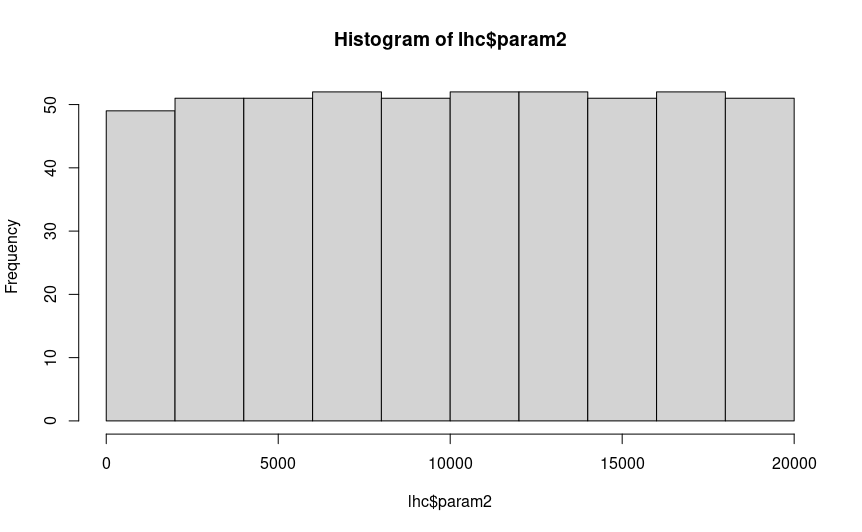
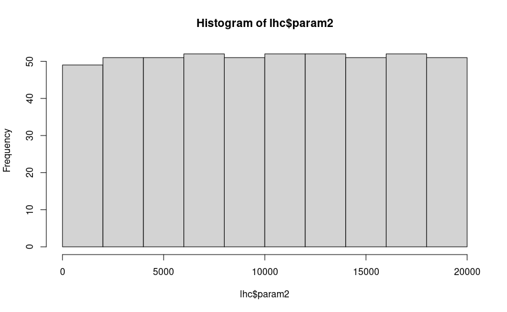

8 Latin Hypercube Sampling
8.1 Overview
When we add a lot of parameters to an experimental design, a problem appears: in order to measure each parameter’s effect across a range of parameter levels or values, you must increase the number of experiments exponentially. For example, to sample two parameters with two levels each, you need four treatments to measure them all. With three parameters with two levels each, you need eight treatment groups. By the time you’re at six parameters, you need 64 groups, and that’s just with two treatment levels each. How do you effectively sample this parameter space well then? Latin hypercube sampling offers a potential solution.
8.2 What is Latin hypercube sampling?
In Latin hypercube sampling (LHC), a continuous range of each variable is specified, and combinations of these parameters are sampled together. The idea is to sample parameter combinations, which when taken together explain the total parameter space (possible values for each parameter) while minimising correlations between sampled variables (so as to avoid collinearity between factors).
8.3 Generating hypercubes in R
To generate LHCs in R, you can use the DoE.wrapper package, which nicely wraps a bunch of
LHC methods from LHS into an easy and user-friendly interface.
# Script to generate a Latin hypercube for two parameters
library(DoE.wrapper)
# Sample a random 32 bit int as a seed for the LHC generation
lhc_seed <- sample(0:.Machine$integer.max, 1)
# In the example in chapter 8, this is 1868057774
lhc <- lhs.design(
nruns = 512,
nfactors = 2,
type = "maximin",
factor.names = list(
param1 = c(0.0, 1.0),
param2 = c(100, 20000)),
seed = lhc_seed
)
# Diagnostics
# Plot param1 against param2 to visualise any obvious gaps in sampling and correlations
plot(lhc)
# Return a matrix of correlations between factors
cor(lhc)
# Plot the histograms to check uniformity
hist(lhc$param1)
hist(lhc$param2)
# Save the output to file
write.csv(lhc, "./LHC.csv")The lhs.design function creates a Latin hypercube of nruns samples, with nfactors factors/columns.
You can choose a method for sampling your parameter combinations with type. I find that most of the time
maximin is best suited to generate LHCs with maximised spaced between samples and minimised correlations
between factors. factor.names is used to specify a list of factor names, and the minimum and maximum values
to sample from. For example, here param1 will be sampled from 0 to 1.
The function will output a dataframe, which you can save as a file to load and reference later.
It’s a good idea to run some diagnostics on your hypercube when its done before you go to use it. You’re looking for
even spacing between samples (no obvious large gaps in sampling) and very little correlation between parameters,
to ensure you get a good sample of all parameters’ effects on your model. To do this, you can plot the LHC,
which will give you a pairwise matrix of parameter combinations, showing you the spread of samples in the whole
parameter space, which should look something like this:
()
You can also create histograms of each parameter to check that they are uniformly distributed with hist(), and
run cor to get the correlations between parameter pairs:
 


If you are satisfied that your hypercube looks uniformly distributed, there are no big gaps you aren’t sampling in any of your
parameter combinations, and there is little correlation between parameters, then you are all good to save the hypercube with
write.csv().
8.4 Running SLiM with hypercube parameters
You shouldn’t have to change any of your sublauncher script to use hypercube parameters: the LHC dataframe is formatted in the same way as any other parameter combination dataframe. Simply load the hypercube .csv instead of combos.csv, and as long as you select the right columns, you’ll be good to go.
8.5 Considerations
When analysing your data, there are some considerations to make: you are treating each parameter as a continuous value, and hypercube combinations will not be nice even numbers. It’s up to you how to deal with this, but some parameters will need truncating or rounding (such as population size, which requires an integer), or ordinal variables like the distribution of size effects (normal, gamma, etc.). For something like that, you can assign cut off values for each factor level (e.g. hypercube value < 0.5 is normal, > 0.5 is gamma), or run your hypercube without those parameters, and repeat the experiment for each level of those ordinal variables. Note that this will exponentially increase the number of runs, as you are incorporating a level of factorial design to your experiment.
In addition, individual hypercube samples can be difficult to use, as they are continuous rather than discrete levels of factors.
Hence, they are better suited to be analysed as a whole rather than in sections. However, it is still possible to factorialise LHC
combinations by creating levels from ranges of values. For example, the first third of your parameter range could be assigned ‘Low’,
the middle third being ‘Medium’ and the top third being ‘High’. However, it’s usually not necessary to do this unless you are missing
combinations of particular parameters, which can occur if you do not have enough samples (nruns in lhs.design()).
8.6 App
I’ve written a little Shiny app to generate your hypercubes for you: it will show you all the diagnostic plots I have explained above,
and allow you to save the file to an arbitrary location. You can run it yourself from Hypercube/app.R